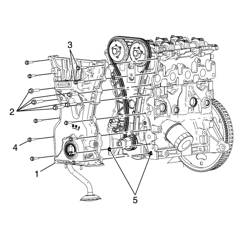
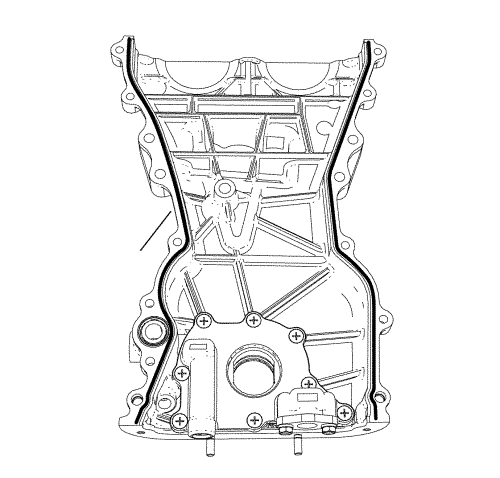

Sustitución de la cubierta delantera del motor con la bomba de aceite — con CH-49290
Herramientas especiales
| • | CH-49290 Herramienta de soporte del motor |
Si desea informarse sobre herramientas regionales equivalentes, consultar Herramientas especiales .
Procedimiento de desmontaje
- Abra el capó.
Advertencia: Consulte Advertencia sobre la desconexión de la batería en la sección Prólogo
- Desconecte el cable de batería negativo.
- Vacíe el sistema de refrigeración. Consultar Drenaje y llenado del sistema de refrigeración .
- Extraiga el colector de admisión superior. Consultar Sustitución del colector de admisión superior .
- Desmontar la tapa del árbol de levas. Consultar Sustitución de la tapa de los árboles de levas .
- Desmonte el indicador de nivel de aceite del motor y el tubo. Consultar Sustitución del tubo de la varilla de nivel de aceite .
- Suba el vehículo a la altura máxima. Consultar Elevación del vehículo con un gato .
- Desmonte el cárter de aceite. Consultar Sustitución del cárter de aceite .
- Desmontar la correa de accionamiento. Consultar Sustitución de la correa de accionamiento .
- Desmonte de la bomba de agua. Consultar Sustitución de la bomba de agua .
- Desmonte el equilibrador del cigüeñal. Consultar Desmontaje del dispositivo equilibrador del cigüeñal .
- Extraiga el alternador. Consultar Sustitución del generador .
- Retire el dispositivo tensor de la correa de accionamiento. Consultar Retirada del tensor de la correa de accionamiento .

Nota: El manual de montaje de SPX se suministra con la herramienta especial y también está disponible en línea directamente en SPX. Vaya a www.spxtools-shop.com.
- Coloque la herramienta de soporte del motor CH-49290 (1) siguiendo las instrucciones del manual de instalación SPX.
- Monte el soporte del par (2) en el motor.
- Apoye el bastidor base CH-904 en un gato.
- Apoye la herramienta de soporte del motor CH-49290 en el bastidor base CH-904.

Nota: El manual de montaje de SPX se suministra con la herramienta especial y también está disponible en línea directamente en SPX.
- Instale la herramienta de soporte del motor CH-49290 (1) siguiendo las instrucciones del manual de instalación SPX.

- Extraiga los pernos (1, 3) y las tuercas (2) del montaje del motor.
- Desmonte el soporte del motor (4).

- Extraiga los pernos (2, 3, 4) de la cubierta delantera del motor.

Nota: Utilice los puntos de palanca y un perno en el orificio del tornillo nivelador para desmontar la cubierta delantera del motor.
- Utilizando los puntos de palanca (1) situados en el borde de la cubierta delantera, corte el sellador de vulcanización a temperatura ambiente (RTV).
- Desmonte la cubierta delantera del motor uniformemente por todos los lados, con una herramienta adecuada. Consultar Desmontaje de la tapa delantera del motor y de la bomba de aceite .
Nota: No hay componentes reparables en la bomba de aceite. Desmonte la bomba únicamente para diagnosticar un problema de lubricación. Una bomba de aceite desmontada no debe volver a utilizarse. Una bomba de aceite desmontada debe sustituirse.
- Desmonte la cubierta delantera del motor si es necesario. Consultar Desmontaje de la bomba de aceite .
Procedimiento de montaje
Nota: NO utilice rasquetas para juntas afiladas o de metal para limpiar las superficies de sellado.
- Limpie con cuidado las superficies de sellado de la cubierta delantera del motor.
- Monte la cubierta delantera del motor si es necesario. Consultar Montaje de la bomba de aceite .

- Aplique un fino cordón de unos 3,5 mm (0,14 pulg.) de sellante para el cárter de aceite
- Monte la tapa delantera del motor.
Nota: No dañe las superficies de contacto.
- Monte la cubierta delantera del motor con la bomba de aceite incluida (1).
Precaución: Consulte Precaución con las fijaciones en la sección Prólogo
Nota: Compruebe las distintas longitudes de tornillo.
- Apriete los pernos (2, 3, 4) a 20 N·m (15 lib. pie).
- Monte el soporte del motor (4).
- Introduzca los pernos (1, 3) y las tuercas (2).
- Apriete los pernos de retención (1) del montaje del motor a la carrocería a 50 N·m (37 lib. pie).
- Apriete el perno (3) y las tuercas (2) de retención del soporte del motor al motor, a 58 N·m (43 lib. pie).
- Desmonte la herramienta (1) del soporte del motor CH-49290.
- Extraiga la herramienta de soporte del motor CH-49290 del bastidor base CH-904.
- Retire el bastidor base CH-904 del gato.
- Desmonte la herramienta de soporte del motor CH-49290 (1).
- Retire el soporte del par (2) del motor.
- Monte el tensor de la correa de accionamiento. Consultar Montaje del tensor de la correa de accionamiento .
- Instale el alternador. Consultar Sustitución del generador .
- Montar el compensador del cigüeñal. Consultar Montaje del balancín del cigüeñal .
- Montar la bomba de agua. Consultar Sustitución de la bomba de agua .
- Monte la correa de accionamiento. Consultar Sustitución de la correa de accionamiento .
- Montar el cárter de aceite. Consultar Sustitución del cárter de aceite .
- Bajar el vehículo. Consultar Elevación del vehículo con un gato .
- Instale el indicador de nivel de aceite del motor y el tubo. Consultar Sustitución del tubo de la varilla de nivel de aceite .
- Monte la tapa del árbol de levas. Consultar Sustitución de la tapa de los árboles de levas .
- Monte el colector de admisión superior. Consultar Sustitución del colector de admisión superior .
- Rellene el aceite del motor, si es necesario.
- Llene el sistema de refrigeración. Consultar Drenaje y llenado del sistema de refrigeración .
- Conecte el cable negativo de la batería. Consultar Desconexión y conexión del cable de batería negativo .
- Cierre el capó.
| © Copyright Chevrolet Europe. Reservados todos los derechos |